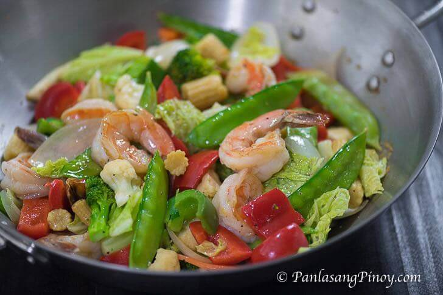

Chopsuey

Description
Chopsuey Stir Fry is a quick and easy vegetable and shrimp stir-fry dish that you can make for dinner. This can be considered as a main dish and it can also be a side dish if eaten with another entree. I obviously like this dish not only for its ease of preparation, but also for its delicious delicious taste and health benefits.
Ingredients
- 12 pieces jumbo shrimp head and shell removed
- 15 pieces snow peas
- 1 15 oz can young corn
- 1 small red bell pepper sliced small rectangular pieces
- 1 green bell pepper sliced small rectangular pieces
- 2 cups chopped cabbage
- 1 &frac 12; cup cauliflower florets
- 1 cup broccoli florets
- 1 medium yellow onion sliced
- ¾ cup chicken broth
- 2 teaspoons cornstarch
- 3 tablespoons cooking oil
- salt and ground black pepper to taste
Instructions
- Heat oil in a wok or large pan.
- Pan-fry the shrimp for 30 seconds per side. Remove from the wok, set aside.
- Using the remaining oil, saute the onion until it starts to loosen.
- Add bell peppers, cauliflower, broccoli, snow peas, and young corn. Stir-fry (in high heat) for 3 to 5 minutes.
- Add the shrimp back into the wok. Season with salt and ground black pepper. Continue to stir-fry for 1 minute.
- Combine chicken broth and cornstarch. Stir until well blended. Pour the mixture into the wok. Toss. Cook for 1 to 2 minutes or until the mixture slightly thickens.
- Transfer to a serving plate. Serve and enjoy!